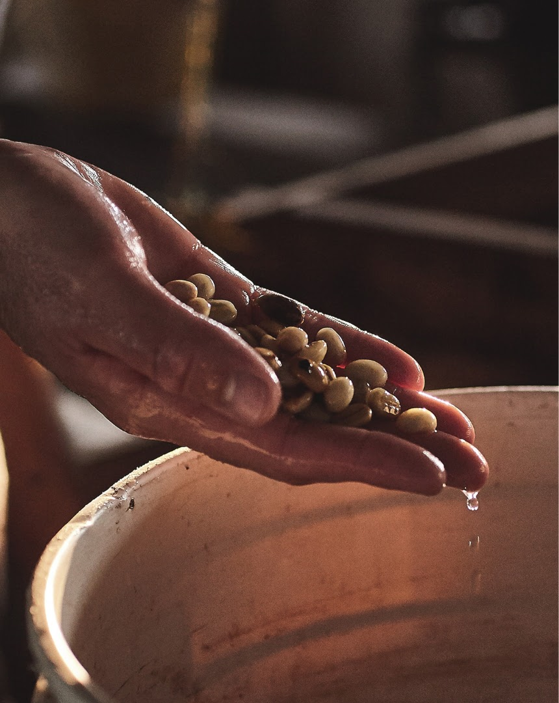

Introducción
Se denomina café a la bebida que se obtiene a partir de las semillas tostadas y molidas de los frutos de la planta de café o cafeto. La bebida es altamente estimulante, pues contiene cafeína. El cultivo del café se encuentra ampliamente difundido en los países tropicales y subtropicales. Los países que cultivan granos de café son: Colombia, Estados Unidos, Indonesia y Kenya.
Cultivo
El café es un producto exclusivo de las zonas tropicales y subtropicales del planeta y crece a partir de los 600 metros de altura sobre el nivel del mar. Esto supone un abanico de temperaturas, suelos y demás factores que tienen una incidencia en la cosecha del café que normalmente es anual.
La siembra de cafetos se da por partes. Primeramente se siembran semillas o bayas en invernaderos controlados. Cuando ha pasado un tiempo y se obtiene el almácigo, se traslada al destino final del arbusto. El tiempo promedio para que un cafeto produzca café de calidad y de manera sostenida es de 3 años. Después de esto, puede producir café hasta por 50 años.
Recolección
Como en muchas cosechas, el café se recoge cuando está maduro (cuando el fruto alcanza un color rojo intenso). Desde la floración del cafeto hasta que se puede recolectar el café pasan entre 6 y 8 meses en los que el café pasa de un color verde intenso a amarillento, naranja y finalmente rojo. Es importante recoger los frutos maduros del árbol ya que el café no sigue su proceso de maduración una vez se ha recolectado.
Recolección a mano
Recoger el café de la plantación a mano requiere de poco material, un canasto es suficiente para
ir dejando los granos seleccionados. Una vez lleno, se vacía en un costal y se vuelve al cafeto.
Se trata de un trabajo ejercido por temporeros, físicamente duro, especialmente si el café está
en plantaciones a gran altura o de difícil acceso.
Recolección en máquina
En zonas de gran producción, la cosecha está mecanizada lo que acorta los tiempos y aumenta la productividad. Un máquina sacude las ramas del cafeto haciendo que los frutos se desprendan y caigan al suelo, encima de lonas dispuestas en la base del cafetal o absorbidas por la recolectora. Este proceso solo es posible en cafetales preparados para que entre la recolectora y en terrenos planos.
¿Cómo se cosecha el café?
Existen dos técnicas para recolectar el café: picking y striping (selectivo y general).
-
 Picking: Los granos se recolectan a mano, uno a
uno,
seleccionando los granos
maduros y
dejando en el cafeto los que aún no lo están. Este proceso solo puede hacerse a mano
y
se usa tanto en cafés de gran calidad como en zonas donde, debido al clima, las
cerezas
del café no se maduran de forma homogénea o en zonas de difícil acceso como pasa en
los
cafés cultivados a gran altura.
Picking: Los granos se recolectan a mano, uno a
uno,
seleccionando los granos
maduros y
dejando en el cafeto los que aún no lo están. Este proceso solo puede hacerse a mano
y
se usa tanto en cafés de gran calidad como en zonas donde, debido al clima, las
cerezas
del café no se maduran de forma homogénea o en zonas de difícil acceso como pasa en
los
cafés cultivados a gran altura.
-
Striping: Se retiran todos los frutos del cafeto de una sola vez, ya sea a
mano o
con
maquinaria especial. Se utiliza cuando la mayor parte de las cerezas de un cafetal
alcanzan la madurez óptima al mismo tiempo y en plantaciones muy extensas. Con esta
técnica, a menudo hay que hacer un cribado posterior para eliminar los granos
demasiado
verdes o que están en mal estado.
La Postcosecha
Una vez recolectadas las cerezas, llega el proceso de extracción del grano de café que hay que separar de la pulpa. Para ello existen dos métodos: seco y húmedo.
Seco: Consiste en dejar los frutos al sol durante semanas hasta que se secan y se puede separar el grano. Actualmente no se utiliza mucho este método.
Húmedo: Primero pasa por una despulpadora para separar el grano del resto del fruto. Después se retiran los restos de mucílago bien por medios mecánicos o dejando fermentar los granos unas horas en agua. Finalmente se levan bien y se dejan secar hasta que tienen entre un 10-12% de humedad.
La Torrefacción
La técnica del tueste es primordial para obtener el sabor y el aroma tan característicos del café. Solo respetando la temperatura y el tiempo que requiere cada variedad y origen de café, obtendremos el mejor resultado en taza.